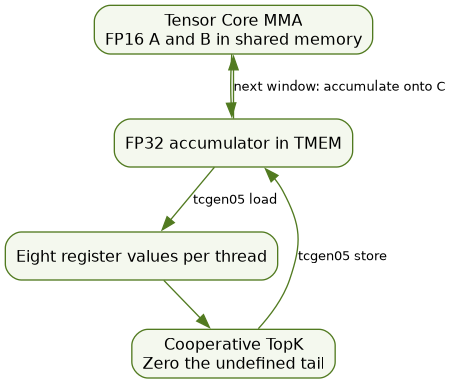

Tensor Core and TopK interop#
This example composes native CuTe Tensor Core operations with
cuda.coop.cutlass selection inside one kernel. Each block owns a
128-by-8 FP32 accumulator in tensor memory (TMEM). In every window, a
Tensor Core matrix multiply-accumulate (MMA) updates it, the threads load it
into registers, and coop.topk_max_keys selects the largest values.
The threads write the selection back to TMEM, where the next MMA consumes
it as its accumulator input.

One window; the stored selection becomes the next window’s C input.#
Run the example#
Use the package prerequisites and an SM100 or SM103 GPU,
such as B200 or GB300. This program uses the tcgen05 MMA and TMEM
instructions supported by those architectures. Its device check rejects
other architectures, including SM120.
Download tensor_memory_topk.py and run:
python tensor_memory_topk.py
The default runs two independent batches, four dependent windows per batch, and keeps 129 of the 1,024 values after each MMA. The script checks every window against NumPy and verifies each TMEM store/load round trip exactly. The complete highlighted program is also on the executable examples page.
Storage and participation#
All 128 threads participate in the register copies and cooperative TopK.
Warp zero issues the MMA. One elected thread commits its completion to an
mbarrier, which all threads wait on before consuming the accumulator.
The kernel’s SmemAllocator allocates the FP16 operands, completion
barrier, and TMEM allocation handle. TmemAllocator reserves the
accumulator separately. A coop.TempStorage descriptor supplies TopK’s
shared scratch and is reused across windows. CuTe lays out the native shared
allocations and cooperative scratch together.
# Native operand buffers stay live alongside coop's separate scratch.
# CuTe places allocations from both libraries in one shared-memory layout.
smem = cutlass.memory.SmemAllocator()
storage = smem.allocate(_SharedStorage)
a = smem.allocate_tensor(
cutlass.Float16, a_layout.outer, 128, a_layout.inner
)
b = smem.allocate_tensor(
cutlass.Float16, b_layout.outer, 128, b_layout.inner
)
a_coords = mma.get_slice(0).partition_A(cute.make_identity_tensor((_M, _K)))
b_coords = mma.get_slice(0).partition_B(cute.make_identity_tensor((_N, _K)))
a_fragment = mma.make_fragment_A(a)
b_fragment = mma.make_fragment_B(b)
accumulator = mma.make_fragment_C(mma.partition_shape_C((_M, _N)))
tmem = cutlass.memory.TmemAllocator(
storage.tmem_address.ptr,
barrier_for_retrieve=pipeline.NamedBarrier(1, _M),
)
# TMEM allocations have a 32-column minimum; this tile uses eight.
tmem.allocate(32)
if warp == 0:
with cute.arch.elect_one():
cute.arch.mbarrier_init(storage.barrier.ptr, 1)
cute.arch.mbarrier_init_fence()
tmem.wait_for_alloc()
pointer = tmem.retrieve_ptr(cutlass.Float32)
accumulator = cute.make_tensor(pointer, accumulator.layout)
tmem.relinquish_alloc_permit()
Copy layouts define the register view#
The TMEM copy partitions the accumulator among threads. Derive the register shape from the copy’s destination partition; the TMEM source layout is not the per-thread register layout. Here each thread receives eight FP32 values. Keeping that layout when copying back preserves the correspondence between register slots and TMEM positions.
# Use the same matrix slice for the copy and both thread partitions.
# The destination partition determines the eight registers per thread.
load_copy = tcgen05.make_tmem_copy(
cute.make_copy_atom(
tcgen05.Ld32x32bOp(tcgen05.Repetition.x8), cutlass.Float32
),
accumulator[(None, None), 0, 0],
)
store_atom = cute.make_copy_atom(
tcgen05.St32x32bOp(tcgen05.Repetition.x8), cutlass.Float32
)
source = load_copy.get_slice(thread).partition_S(
accumulator[(None, None), 0, 0]
)
coordinates = mma.get_slice(0).partition_C(
cute.make_identity_tensor((_M, _N))
)
register_shape = (
load_copy.get_slice(thread)
.partition_D(coordinates[(None, None), 0, 0])
.shape
)
assert cute.size(register_shape) == _N
registers = cute.make_rmem_tensor(register_shape, cutlass.Float32)
MMA produces the next accumulator#
Threads populate A and B in shared memory. The asynchronous-proxy fence
and block barrier precede their consumption by MMA. The first window starts
a fresh accumulator; subsequent windows set ACCUMULATE and add their
product to the selection left in TMEM. The completion barrier’s phase toggles
after each window.
# The first product varies by matrix coordinate. Later products are
# uniform, so their host reference is independent of TopK ordering.
# SIMT writes must become visible to the asynchronous MMA proxy.
for index in cutlass.range_constexpr(_M * _K // _M):
offset = thread + index * _M
row, k = a_coords[offset]
value = cutlass.Float16(batch + window + 1)
if window == 0:
value = cutlass.Float16((row % 17 - 8) + (k % 3))
a[offset] = value
for index in cutlass.range_constexpr(_N * _K // _M):
offset = thread + index * _M
column, k = b_coords[offset]
value = cutlass.Float16(1)
if window == 0:
value = cutlass.Float16(column % 7 - 3 + batch)
b[offset] = value
cute.arch.fence_proxy("async.shared", space="cta")
cute.arch.sync_threads()
# One warp issues MMA; all threads wait for its completion barrier.
# After the first window, C is the selection stored by the last window.
if warp == 0:
mma.set(tcgen05.Field.ACCUMULATE, window > 0)
cute.gemm(
mma,
accumulator,
a_fragment[None, None, None, 0],
b_fragment[None, None, None, 0],
accumulator,
)
with cute.arch.elect_one():
tcgen05.commit(storage.barrier.ptr)
cute.arch.mbarrier_wait(storage.barrier.ptr, phase)
phase ^= 1
SIMT selection operates on registers#
After the TMEM load, ThreadData.from_register_tensor presents the
register values to coop.topk_max_keys. Selection spans the entire
block’s 1,024 values. Its first keep logical output positions are valid;
their order is unspecified. The code explicitly zeros every other slot
before writing a complete accumulator back to TMEM.
# Native CuTe moves TMEM values into registers. ThreadData then exposes
# those per-thread values to coop without claiming ownership of TMEM.
cute.copy(load_copy, source, registers)
values = coop.ThreadData.from_register_tensor(registers)
for item in cutlass.range_constexpr(_N):
result[0, thread * _N + item, window, batch] = values[item]
selected = coop.topk_max_keys(
group, values, k=keep, temp_storage=scratch
)
# Only the selected prefix is defined. Zero the remaining positions
# before the next MMA consumes the entire accumulator.
for item in cutlass.range_constexpr(_N):
value = cutlass.Float32(0)
if thread * _N + item < keep:
value = selected[item]
values[item] = value
result[1, thread * _N + item, window, batch] = value
TopK packs selected keys into its output prefix. Their original matrix
coordinates are not retained. In this example, the packed selection becomes
the next accumulator state. An algorithm that needs original coordinates
can use coop.topk_max_pairs with coordinate or index payloads and place
the selected results as its next MMA requires.
Store, verify, and feed the next MMA#
to_tensor_ssa(like=registers) restores the register tensor’s layout for
the TMEM store. The store-completion fence and block barrier order that
write before the reload. The reload is saved for validation; its completion
fence and barrier precede the next iteration or TMEM deallocation.
# Reconstruct the native register layout and apply the inverse copy.
registers.store(values.to_tensor_ssa(like=registers))
cute.copy(store_atom, registers, source)
# Complete all stores before another warp or the next MMA uses TMEM.
cute.arch.fence_view_async_tmem_store()
cute.arch.sync_threads()
# Read back the stored selection, including the explicitly zero tail.
cute.copy(load_copy, source, registers)
roundtrip = coop.ThreadData.from_register_tensor(registers)
for item in cutlass.range_constexpr(_N):
result[2, thread * _N + item, window, batch] = roundtrip[item]
cute.arch.fence_view_async_tmem_load()
cute.arch.sync_threads()
These native synchronization steps cover MMA and TMEM activity. The example
uses TempStorage() with manual synchronization: the block barriers after
TopK also order scratch reuse before the next window. A scratch-reuse
barrier alone does not complete the native asynchronous operations.
Checking an unordered selection#
The first window uses nonuniform operands so its accumulator contains different values. Later products add the same value to every accumulator element. This makes an independent NumPy reference possible without assuming a particular order for TopK’s selected keys: compare sorted multisets before and after selection, then compare the stored and reloaded values element-for-element. Each subsequent MMA must incorporate the previous window’s selection for those checks to pass.
The program uses small tiles and records intermediate results to make this data flow easy to inspect. CUTLASS’s Blackwell GEMM tutorials extend native MMA kernels with TMA transfers, pipelining, and larger tiles.